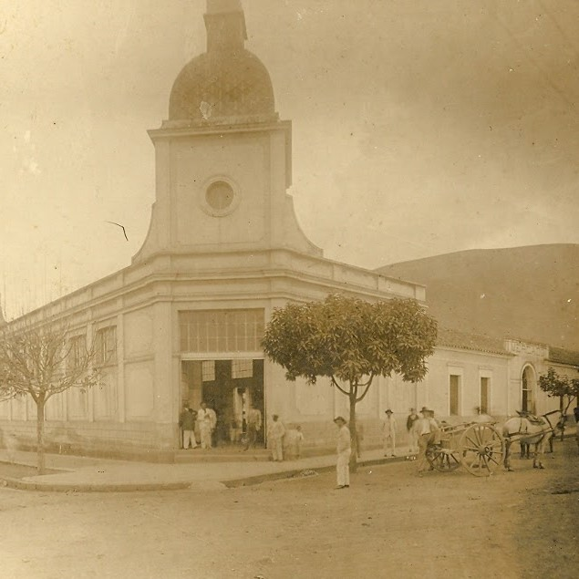
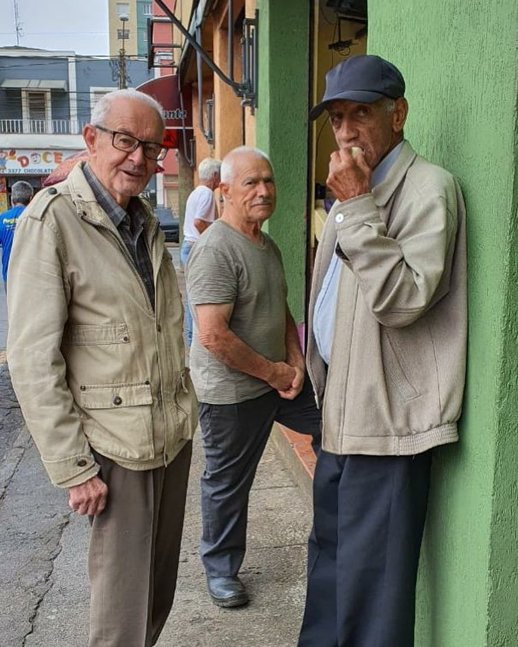
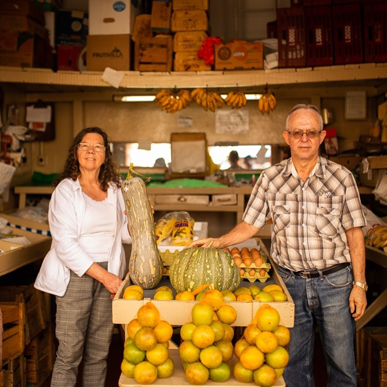
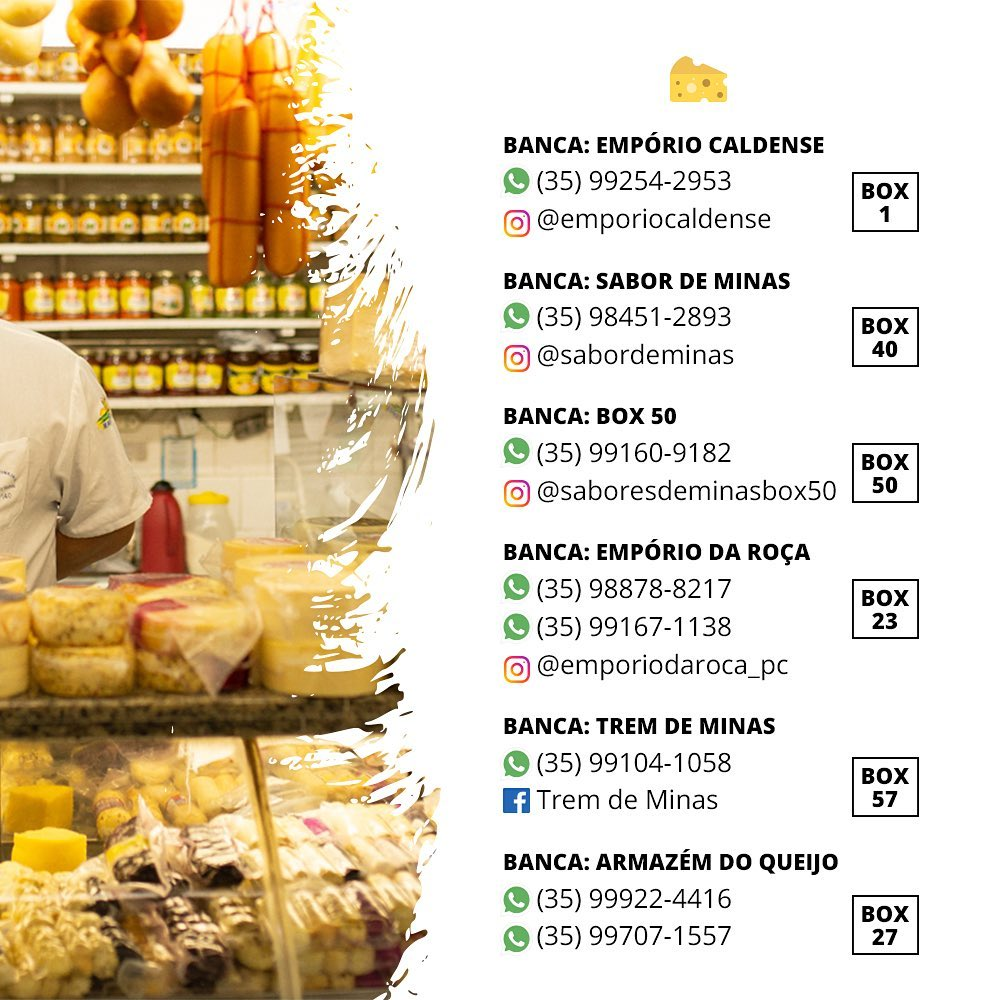
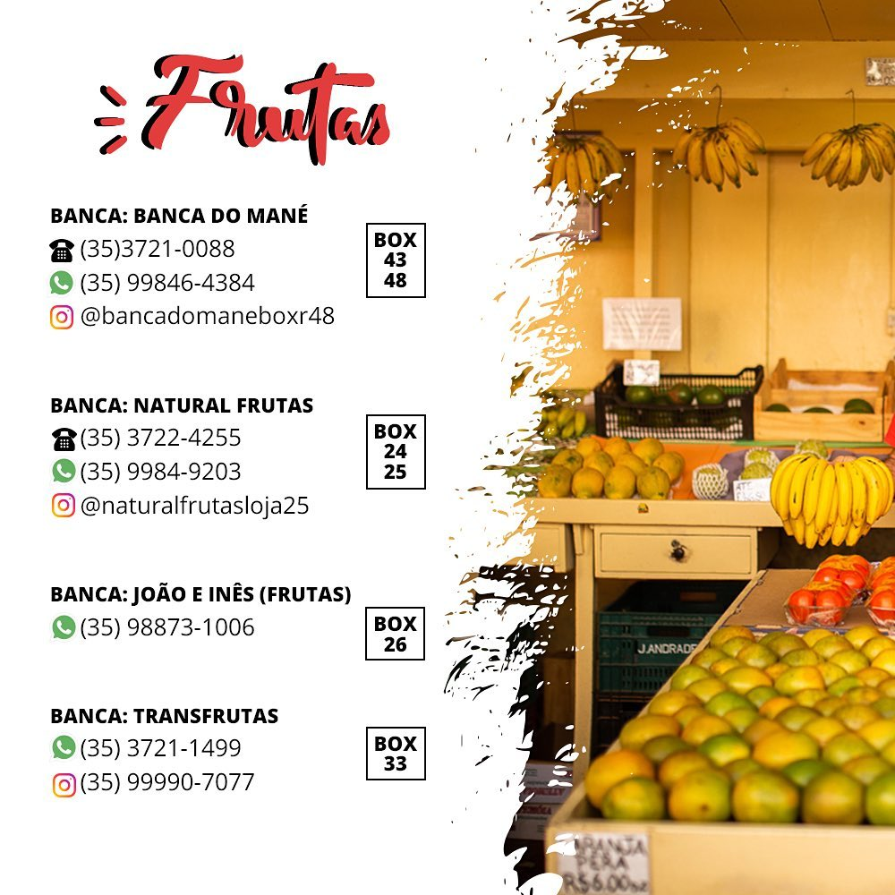
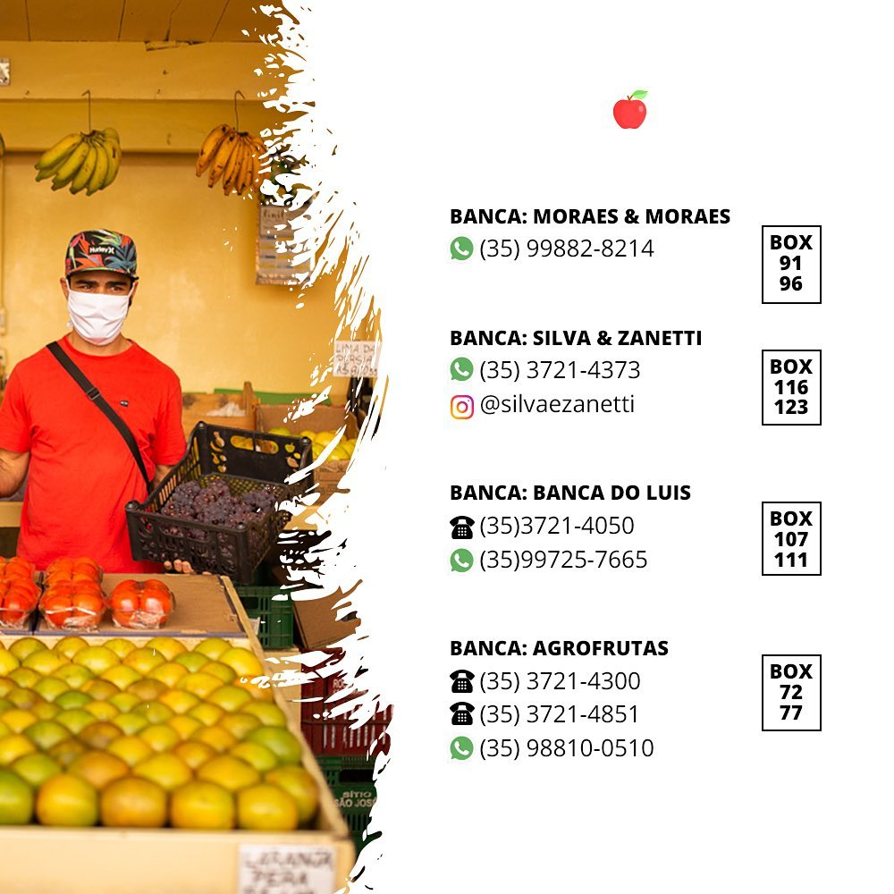
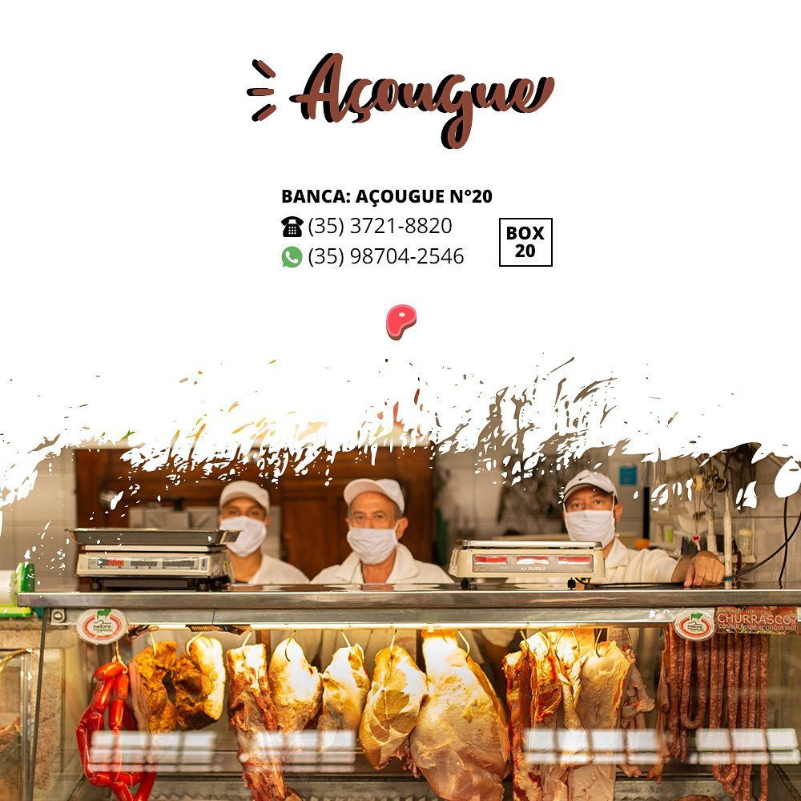

Historia
O primeiro Mercadao da cidade data de 1890 e se situava na Av. Assis Figueiredo (atual Casa Carneiro).


Em 1969 foi transferido para Rua Pernambuco aonde permanece ate hoje. Muitos mercadences que vieram do Mercado Antigo ainda estao por aqui.
As tradicionais bancas passam de pai para filho que preservam a qualidade e o otimo atendimento.
Contatos



